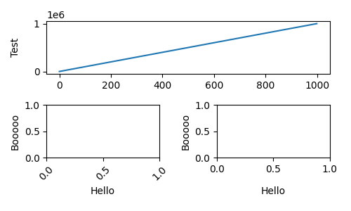
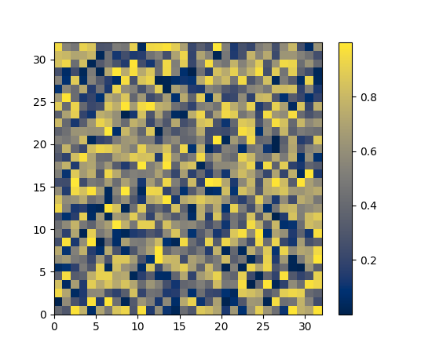

New in Matplotlib 2.2¶
Constrained Layout Manager¶
Warning
Constrained Layout is experimental. The behaviour and API are subject to change, or the whole functionality may be removed without a deprecation period.
A new method to automatically decide spacing between subplots and their
organizing GridSpec instances has been added. It is meant to
replace the venerable tight_layout method. It is invoked via
a new constrained_layout=True kwarg to
Figure or subplots.
There are new rcParams for this package, and spacing can be
more finely tuned with the new set_constrained_layout_pads.
Features include:
Automatic spacing for subplots with a fixed-size padding in inches around subplots and all their decorators, and space between as a fraction of subplot size between subplots.
Spacing for
suptitle, and colorbars that are attached to more than one axes.Nested
GridSpeclayouts usingGridSpecFromSubplotSpec.For more details and capabilities please see the new tutorial: Constrained Layout Guide
Note the new API to access this:
New plt.figure and plt.subplots kwarg: constrained_layout¶
figure() and subplots()
can now be called with constrained_layout=True kwarg to enable
constrained_layout.
New ax.set_position behaviour¶
Axes.set_position now makes the specified axis no
longer responsive to constrained_layout, consistent with the idea that the
user wants to place an axis manually.
Internally, this means that old ax.set_position calls inside the library
are changed to private ax._set_position calls so that
constrained_layout will still work with these axes.
New figure kwarg for GridSpec¶
In order to facilitate constrained_layout, GridSpec now accepts a
figure keyword. This is backwards compatible, in that not supplying this
will simply cause constrained_layout to not operate on the subplots
orgainzed by this GridSpec instance. Routines that use GridSpec (e.g.
fig.subplots) have been modified to pass the figure to GridSpec.
xlabels and ylabels can now be automatically aligned¶
Subplot axes ylabels can be misaligned horizontally if the tick labels
are very different widths. The same can happen to xlabels if the
ticklabels are rotated on one subplot (for instance). The new methods
on the Figure class: Figure.align_xlabels and Figure.align_ylabels
will now align these labels horizontally or vertically. If the user only
wants to align some axes, a list of axes can be passed. If no list is
passed, the algorithm looks at all the labels on the figure.
Only labels that have the same subplot locations are aligned. i.e. the ylabels are aligned only if the subplots are in the same column of the subplot layout.
Alignment is persistent and automatic after these are called.
A convenience wrapper Figure.align_labels calls both functions at once.
(Source code, png, pdf)
{kind=link}

Axes legends now included in tight_bbox¶
Legends created via ax.legend can sometimes overspill the limits of
the axis. Tools like fig.tight_layout() and
fig.savefig(bbox_inches='tight') would clip these legends. A change
was made to include them in the tight calculations.
Cividis colormap¶
A new dark blue/yellow colormap named 'cividis' was added. Like viridis, cividis is perceptually uniform and colorblind friendly. However, cividis also goes a step further: not only is it usable by colorblind users, it should actually look effectively identical to colorblind and non-colorblind users. For more details see Nuñez J, Anderton C, and Renslow R: "Optimizing colormaps with consideration for color vision deficiency to enable accurate interpretation of scientific data".
(Source code, png, pdf)
{kind=link}

New style colorblind-friendly color cycle¶
A new style defining a color cycle has been added, tableau-colorblind10, to provide another option for colorblind-friendly plots. A demonstration of this new style can be found in the reference of style sheets. To load this color cycle in place of the default one:
import matplotlib.pyplot as plt
plt.style.use('tableau-colorblind10')
Support for numpy.datetime64¶
Matplotlib has supported datetime.datetime dates for a long time in
matplotlib.dates. We
now support numpy.datetime64 dates as well. Anywhere that
datetime.datetime could be used, numpy.datetime64 can be used. eg:
time = np.arange('2005-02-01', '2005-02-02', dtype='datetime64[h]')
plt.plot(time)
Writing animations with Pillow¶
It is now possible to use Pillow as an animation writer. Supported output formats are currently gif (Pillow>=3.4) and webp (Pillow>=5.0). Use e.g. as
from __future__ import division
from matplotlib import pyplot as plt
from matplotlib.animation import FuncAnimation, PillowWriter
fig, ax = plt.subplots()
line, = plt.plot([0, 1])
def animate(i):
line.set_ydata([0, i / 20])
return [line]
anim = FuncAnimation(fig, animate, 20, blit=True)
anim.save("movie.gif", writer=PillowWriter(fps=24))
plt.show()
Slider UI widget can snap to discrete values¶
The slider UI widget can take the optional argument valstep. Doing so forces the slider to take on only discrete values, starting from valmin and counting up to valmax with steps of size valstep.
If closedmax==True, then the slider will snap to valmax as well.
capstyle and joinstyle attributes added to Collection¶
The Collection class now has customizable capstyle and joinstyle
attributes. This allows the user for example to set the capstyle of
errorbars.
pad kwarg added to ax.set_title¶
The method Axes.set_title now has a pad kwarg, that specifies the
distance from the top of an axes to where the title is drawn. The units
of pad is points, and the default is the value of the (already-existing)
rcParams["axes.titlepad"] (default: 6.0).
Comparison of 2 colors in Matplotlib¶
As the colors in Matplotlib can be specified with a wide variety of ways, the
matplotlib.colors.same_color method has been added which checks if
two colors are the same.
Autoscaling a polar plot snaps to the origin¶
Setting the limits automatically in a polar plot now snaps the radial limit to zero if the automatic limit is nearby. This means plotting from zero doesn't automatically scale to include small negative values on the radial axis.
The limits can still be set manually in the usual way using set_ylim.
PathLike support¶
On Python 3.6+, savefig, imsave,
imread, and animation writers now accept os.PathLikes
as input.
Axes.tick_params can set gridline properties¶
Tick objects hold gridlines as well as the tick mark and its label.
Axis.set_tick_params, Axes.tick_params and pyplot.tick_params
now have keyword arguments 'grid_color', 'grid_alpha', 'grid_linewidth',
and 'grid_linestyle' for overriding the defaults in rcParams:
'grid.color', etc.
Axes.imshow clips RGB values to the valid range¶
When Axes.imshow is passed an RGB or RGBA value with out-of-range
values, it now logs a warning and clips them to the valid range.
The old behaviour, wrapping back in to the range, often hid outliers
and made interpreting RGB images unreliable.
Properties in matplotlibrc to place xaxis and yaxis tick labels¶
Introducing four new boolean properties in matplotlibrc for default
positions of xaxis and yaxis tick labels, namely,
rcParams["xtick.labeltop"] (default: False), rcParams["xtick.labelbottom"] (default: True), rcParams["ytick.labelright"] (default: False) and
rcParams["ytick.labelleft"] (default: True). These can also be changed in rcParams.
PGI bindings for gtk3¶
The GTK3 backends can now use PGI instead of PyGObject. PGI is a fairly incomplete binding for GObject, thus its use is not recommended; its main benefit is its availability on Travis (thus allowing CI testing for the gtk3agg and gtk3cairo backends).
The binding selection rules are as follows:
- if gi has already been imported, use it; else
- if pgi has already been imported, use it; else
- if gi can be imported, use it; else
- if pgi can be imported, use it; else
- error out.
Thus, to force usage of PGI when both bindings are installed, import it first.
Cairo rendering for Qt, WX, and Tk canvases¶
The new Qt4Cairo, Qt5Cairo, WXCairo, and TkCairo
backends allow Qt, Wx, and Tk canvases to use Cairo rendering instead of
Agg.
Added support for QT in new ToolManager¶
Now it is possible to use the ToolManager with Qt5 For example
import matplotlib
matplotlib.use('QT5AGG') matplotlib.rcParams['toolbar'] = 'toolmanager' import matplotlib.pyplot as plt
plt.plot([1,2,3]) plt.show()
Treat the new Tool classes experimental for now, the API will likely change and perhaps the rcParam as well
The main example Tool Manager shows more details, just adjust the header to use QT instead of GTK3
TkAgg backend reworked to support PyPy¶
PyPy can now plot using the TkAgg backend, supported on PyPy 5.9 and greater (both PyPy for python 2.7 and PyPy for python 3.5).
Python logging library used for debug output¶
Matplotlib has in the past (sporadically) used an internal
verbose-output reporter. This version converts those calls to using the
standard python logging library.
Support for the old rcParams verbose.level and verbose.fileo is
dropped.
The command-line options --verbose-helpful and --verbose-debug are
still accepted, but deprecated. They are now equivalent to setting
logging.INFO and logging.DEBUG.
The logger's root name is matplotlib and can be accessed from programs
as:
import logging
mlog = logging.getLogger('matplotlib')
Instructions for basic usage are in Troubleshooting and for developers in Contributing.
Improved repr for Transforms¶
Transforms now indent their reprs in a more legible manner:
In [1]: l, = plt.plot([]); l.get_transform()
Out[1]:
CompositeGenericTransform(
TransformWrapper(
BlendedAffine2D(
IdentityTransform(),
IdentityTransform())),
CompositeGenericTransform(
BboxTransformFrom(
TransformedBbox(
Bbox(x0=-0.05500000000000001, y0=-0.05500000000000001, x1=0.05500000000000001, y1=0.05500000000000001),
TransformWrapper(
BlendedAffine2D(
IdentityTransform(),
IdentityTransform())))),
BboxTransformTo(
TransformedBbox(
Bbox(x0=0.125, y0=0.10999999999999999, x1=0.9, y1=0.88),
BboxTransformTo(
TransformedBbox(
Bbox(x0=0.0, y0=0.0, x1=6.4, y1=4.8),
Affine2D(
[[ 100. 0. 0.]
[ 0. 100. 0.]
[ 0. 0. 1.]])))))))